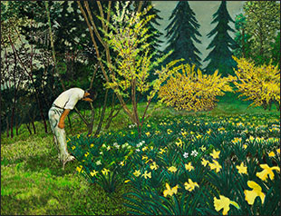
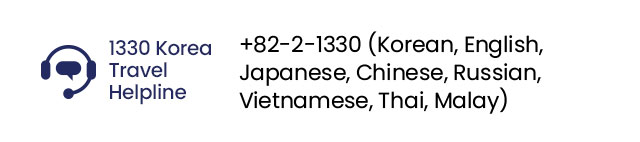

Main attractions
of Daehangno,
Seoul’s Romance Street
ARKO Art Center
(아르코미술관)
Representative architecture of Daehangno with its red bricks. Exhibition hall that’s been loved for over 40 years.
ARKO Arts Theater
(아르코예술극장)
A theater where you can see various art communities perform. Over 100,000 artists and audience visit every year.


National Museum of Modern
and Contemporary Art, Seoul
[MMCA Seoul] (국립현대미술관 (서울관))
and Contemporary Art, Seoul
[MMCA Seoul] (국립현대미술관 (서울관))
Museum at the center of contemporary art. It’s conveniently located near Gyeongbokgung Palace for easy access.
Attractions near
the art museum
the art museum
 Gwanghwamun Square
Gwanghwamun Square
National Museum of Modern
and Contemporary Art Cheongju (국립현대미술관(청주관))
and Contemporary Art Cheongju (국립현대미술관(청주관))
First “Open storage” museum in Korea
with artworks from other museums,
government, art bank and more.
Attractions near
the art museum
the art museum
National Museum of Modern
and Contemporary Art, Gwacheon
[MMCA Gwacheon] (국립현대미술관 (과천관))
and Contemporary Art, Gwacheon
[MMCA Gwacheon] (국립현대미술관 (과천관))
Fun for the whole family at this
eco-friendly museum
Attractions near
the art museum
the art museum
National Museum of Modern
and Contemporary Art,
Deoksugung [MMCA Deoksugung] (국립현대미술관 (덕수궁관))
and Contemporary Art,
Deoksugung [MMCA Deoksugung] (국립현대미술관 (덕수궁관))
A museum within a palace with Korea’s modern artworks.
Attractions near
the art museum
the art museum
Seoul Museum of Art
(서울시립미술관(서소문본관))
Located along the Deoksugung Stone Wall Path, various special exhibitions make this museum popular.
Attractions near the art museum
Former Belgian Consulate Office
(Nam-Seoul Museum of Art
(SeMA)) (서울 구 벨기에영사관 (현, 서울시립미술관 남서울생활미술관))
(Nam-Seoul Museum of Art
(SeMA)) (서울 구 벨기에영사관 (현, 서울시립미술관 남서울생활미술관))
Historic atmosphere fills the museum. Previously
housed the Belgium Embassy in the 1900s, and
the building was completely moved to the
current location before opening as a museum.
Attractions from the subway

-
Korea Art Week
(September 1-11)
Located along the Deoksugung Stone Wall Path, various special exhibitions make this museum popular.
More info -
Kiaf Seoul
(September 7-10)Connecting the international art market with Korea,
More info
the international art fair has over 20 years of history -
Frieze Seoul 2023
(September 6-9)One of three World Art Fairs, Seoul was the first Asian cities to host. Over 120 domestic and international galleries display modern arts.
More info
Something like an Appleseed
《사과 씨앗 같은 것》
《사과 씨앗 같은 것》
- Period: April 27, 2023 – February 12, 2024
- Venue: Nam June Paik Art Center (백남준 아트센터)
Something like an Appleseed
《사과 씨앗 같은 것》 More info
《사과 씨앗 같은 것》 More info
- Period: April 27, 2023 – February 12, 2024
- Venue: Nam June Paik Art Center (백남준 아트센터)
An art center dedicated to the works of video artist pioneer Nam June Paik, 《Something like an Appleseed》 is an artwork collaborated with Mary
Bauermeister and Manfred Leve to portray the limitless potential of the seed through art and communication.
The 12th Seoul Mediacity Biennale
제12회 서울미디어시티비엔날레
제12회 서울미디어시티비엔날레
- Period: September 21 – November 19,2023
- Venue: Seoul Museum of Art (서울시립미술관)
- Period: September 21 – November 19,2023
- Venue: Seoul Museum of Art (서울시립미술관)
Directed by Rachael Rakes, 《THIS TOO, IS A MAP》 brought media artists from around the world to develop maps in topics of diaspora, immigration, language and boundary. Maps bring new lights to topics we thought we knew by adding new touch.
MMCA Hyundai Motors Series 2023 :
Jung Yeondoo
《MMCA 현대차시리즈 2023-정연두》
Jung Yeondoo
《MMCA 현대차시리즈 2023-정연두》
- Period: September 6, 2023 – February 25, 2024
- Venue: National Museum of Modern and Contemporary Art, Korea (국립현대미술관)
- Period: September 6, 2023 – February 25, 2024
- Venue: National Museum of Modern and Contemporary Art, Korea (국립현대미술관)
The 10th MMCA Hyundai Motors Series features artist Jung Yeondoo. The artist explores Korean immigration to Mexico during the early 20th century through video-based
installation 《Century’s Journey》 as well as five new art works.
Nho Wonhee: You were there
노원희 개인전 《거기 계셨군요》
노원희 개인전 《거기 계셨군요》
- Period: August 11 – November 19, 2023
- Venue: ARKO Art Center (아르코미술관)
- Period: August 11 – November 19, 2023
- Venue: ARKO Art Center (아르코미술관)
Operated by Korea Culture and Arts Committee, ARKO Art Center support influential
artist’ new book release and creative activities through exhibitions. Artist Nho
Wonhee has a solo exhibition featuring her works from 1980s to new release as well as large drawing on cloth, collaborative works, and writings featured in newspapers for a total of over 100 works.

Dong Sik Rim: The Man Lifting up Moss
임동식 개인전 《이끼를 들어올리는 사람》
임동식 개인전 《이끼를 들어올리는 사람》
- Period: September 1 – October 1, 2023
- Venue: Gana Art Center (가나아트센터)
- Period: September 1 – October 1, 2023
- Venue: Gana Art Center (가나아트센터)
A leading painter with a focus on the ecosystem of Korea, Dong sik Rim holds a solo
exhibition of his work 《The Man Lifting up Moss.》 The exhibition will feature performance works which represent his style of art, as well as painting and works that provides stories of his childhood.
Koo Jeong A: LEVITATION
구정아 개인전 《공중 부양》
구정아 개인전 《공중 부양》
- Period: September 5 – October 14, 2023
- Venue: PKM Gallery (PKM갤러리)
- Period: September 5 – October 14, 2023
- Venue: PKM Gallery (PKM갤러리)
Koo Jeong A, a solo artist representing Korean Pavilion at the 60th Venice Biennale in 2024, is opening a solo exhibition 《LEVITATION.》 The exhibition will feature books, drawings, 2D and 3D printings, sculptures and installations with a focus on reality vs. unreal, existence vs. nonexistence.
Haegue Yang: Latent Dwelling
양혜규 개인전 《동면한옥》
양혜규 개인전 《동면한옥》
- Period: August 30 – October 8, 2023
- Venue: Kukje Gallery (국제갤러리)
- Period: August 30 – October 8, 2023
- Venue: Kukje Gallery (국제갤러리)
Solo exhibition of Haegue Yang’s 《Latent Dwelling》 will be held at the newly renovated Hanok section of Kukje Gallery. As a representative artist of Korea working in Europe, her most recent 《Emergence》 series will also be on display.
Suh Yongsun: My Name is Red
서용선 개인전 《내 이름은 빨강》
서용선 개인전 《내 이름은 빨강》
- Period: July 15 – October 22, 2023
- Venue: Art Sonje Center (아트선재센터)
- Period: July 15 – October 22, 2023
- Venue: Art Sonje Center (아트선재센터)
Using a thick writing tool to fill the canvas, Suh Yongsun’s 《My Name is Red》 solo exhibition is being held at Art Sonje Center. The exhibition features over 70 works with three themes 《People, City, History》 from 1980s and 1990s to current times. The exhibition will break away from previous evaluations and begin a new conversation in this picturesque world.
Kim Beom : How to become a rock
김범 개인전 《바위가 되는 법》
김범 개인전 《바위가 되는 법》
- Period: July 27 – December 3, 2023
- Venue: Leeum Museum of Art (리움미술관)
- Period: July 27 – December 3, 2023
- Venue: Leeum Museum of Art (리움미술관)
An anticipating solo exhibition of Kim Beom’s 《How to become a rock》 shows the artist’s simple expression style with flat humor. As a large scale survey exhibition that shows 30 years of work, there are more than 70 works from his earliest picture arts to representative installation and design projects.
Botched Art: The Meanderings of
Sung Neung Kyung
성능경 개인전 《성능경의 망친 예술 행각》
Sung Neung Kyung
성능경 개인전 《성능경의 망친 예술 행각》
- Period: August 23 – October 8, 2023
- Venue: Gallery Hyundai (갤러리현대)
- Period: August 23 – October 8, 2023
- Venue: Gallery Hyundai (갤러리현대)
Representative experimental artist of Korea, Sung Neung Kyung reinterprets actions that have yet to be interpreted using art. The exhibition will feature more than 100 works from the past 50 years including photo installations, drawing performances, and newspapers & drawings.
+82-2-1330
(Korean, English, Japanese, Chinese, Russian, Vietnamese, Thai, Malay)
